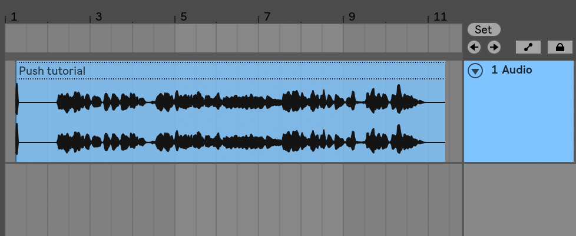
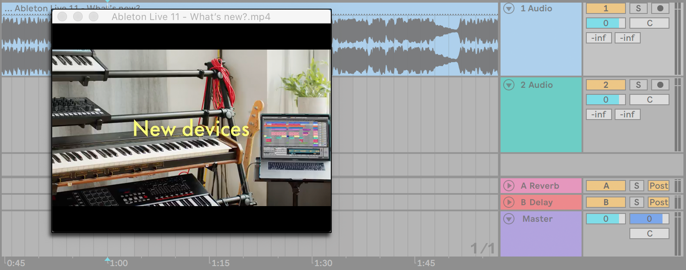
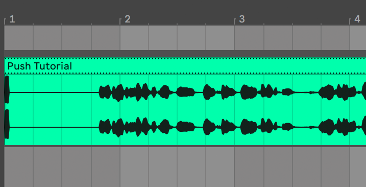
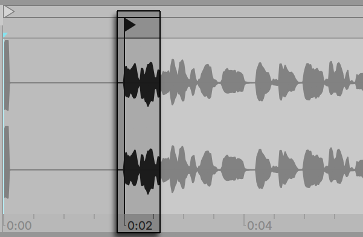
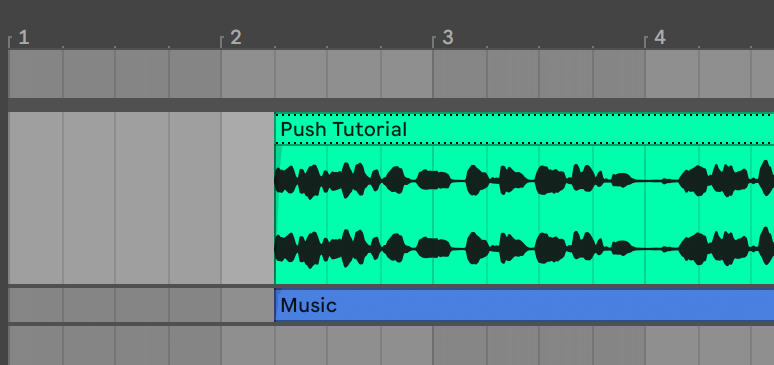
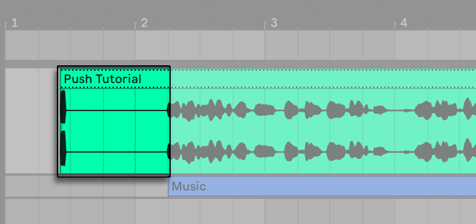

27. Working with Video
Live’s flexible architecture makes it the perfect choice for scoring to video. You can trim video clips to select parts of them and use Warp Markers to visually align music in the Arrangement View with the video. You can then render your edited video file along with your audio.
Before diving in, you will want to be familiar with the concepts presented in the Audio Clips, Tempo, and Warping chapter.
If you are interested in syncing Live with external video equipment, you’ll also want to read the chapter on synchronization.
27.1 Importing Video
Live can import movies in Apple QuickTime format (.mov) to be used as video clips. Movie files appear in Live’s browser and can be imported by dragging them into the Live Set.
Note that Live will only display video for video clips residing in the Arrangement View. Movie files that are loaded into the Session View are treated as audio clips.
27.2 The Appearance of Video in Live
27.2.1 Video Clips in the Arrangement View
A video clip in the Arrangement View looks just like an audio clip, except for the “sprocket holes“ in its title bar.

For the most part, video clips in the Arrangement View are treated just like audio clips. They can be trimmed, for example, by dragging their right or left edges. However, there are some editing commands that, when applied to a video clip, will cause it to be replaced by an audio clip (which by definition has no video component). This replacement only occurs internally — your original movie files are never altered. The commands which will cause this are: Consolidate, Reverse and Crop.
27.2.2 The Video Window

The Video Window is a separate, floating window that always remains above Live’s main window. It can be dragged to any location you like, and it will never get covered up by Live. You can toggle its visibility with a command in the View menu. The Video Window can be resized by dragging its bottom right-hand corner. The size and location of this window are not specific to the Set, and will be restored when you open a video again. The video can be shown in full screen (and optionally on a second monitor) by double-clicking in the Video Window. Hold Alt (Win) / Option (Mac) and double-click in the Video Window to restore it to original size of the video.
27.2.2.1 Movies with Partial Tracks
In the QuickTime file format, the audio and video components do not have to span the entire length of a movie; gaps in playback are allowed. During gaps in video, Live’s Video Window will display a black screen; gaps in audio will play silence.
27.2.3 Clip View
Soundtrack composers will want to note the Tempo Leader option in Live’s Clip View. When scoring to video, video clips are usually set as tempo leaders, while audio clips are left as tempo followers. These are, therefore, the default warp properties of clips in the Arrangement View. In this scenario, adding Warp Markers to a video clip defines “hit points“ that the music will sync to. Note that a video clip’s Warp switch needs to be activated in order for the clip to be set as the tempo leader.

Remember from the Audio Clips, Tempo, and Warping chapter that, although any number of warped Arrangement clips can have the Tempo Leader option activated, only the bottom-most, currently playing clip is the actual tempo leader.
This also means that it is possible for video clips that are not the current tempo leader to become warped, resulting in warped video output in the Video Window.
27.2.3.1 Warp Markers
While dragging a Warp Marker belonging to a video clip, you will notice that the Video Window updates to show the corresponding video frame, so that any point in the music can be easily aligned with any point in the video clip.
Since Live displays a movie file’s embedded QuickTime markers, they can be used as convenient visual cues when setting Warp Markers.
27.3 Matching Sound to Video
In Live, it takes just a few steps to get started with video. Let’s look at a common scenario — matching a piece of music to edits or hit points in a video:
- Make sure that Live’s Arrangement View is visible. If you’re using Live on a single monitor, your computer keyboard’s Tab key will toggle between the Session View and Arrangement View.
- Drag a QuickTime movie from Live’s browser and drop it into an audio track in the Arrangement View. The Video Window will appear to display the video component of the movie file. Remember that you can move this window to any convenient location on the screen.
- Now that the video clip is loaded, drag an audio clip into the Arrangement View’s drop area. A new track will automatically be created for it. Unfold both tracks so you can see their contents by clicking the
 buttons to the left of their names.
buttons to the left of their names. - Double-click on the video clip’s title bar to view it in the Clip View. In the Audio tab/panel, make sure that the Warp button is enabled. Warped clips in the Arrangement View can be set as tempo leader or follower. We want the Leader/Follower switch set to Leader, which will force the rest of the clips in the Live Set to adapt to the video clip’s tempo (i.e., its normal playback rate).
- Now add Warp Markers to the video clip, and adjust them to your liking. The locations of the Warp Markers define the synchronizing points between our music and our video. Notice how the video clip’s waveform in the Arrangement View updates to reflect your changes as you make them.
- If desired, enable the Arrangement Loop to focus on a specific section of the composition.
- When you have finished, choose the Export Audio/Video command from Live’s File menu. All of your audio will be mixed down and saved as a single audio file. You can also export your video file using this command.
27.4 Video Trimming Tricks
Commonly, composers receive movie files with a few seconds of blank space before the “real“ beginning of the action. This pre-roll (“two-beep“) serves as a sync reference for the mixing engineer, who expects that the composer’s audio files will also include the same pre-roll. While working on music, however, the pre-roll is in the composer’s way: It would be more natural for the movie action to start at song time 1.1.1 and SMPTE time 00:00:00:00. This can be accommodated by trimming video clips, as follows.
- First, we drop a movie file at the start of the Arrangement (1.1.1).

- Next, we double-click on the video clip’s title bar to display its contents in the Clip View. There, we drag the Start Marker to the right so the video clip starts at the beginning of the action.

- Now, both the action and the music to be composed start at 1.1.1 / 00.00.00.00. Once the music is done and ready to be rendered to disk, we need to bring back the pre-roll:
- In the Arrangement View, we select all materials (Edit menu/Select All), then drag the entire composition a few seconds to the right:

- Now, we click on the video clip’s title bar (to deselect everything else), then drag the video clip’s left edge to the left as far as possible to reveal the pre-roll again.

The Export Audio/Video command, by default, creates sample files as long as the Arrangement selection; as the video clip is still selected, the exported sample file will have the exact same duration as the original movie file, including the pre-roll.